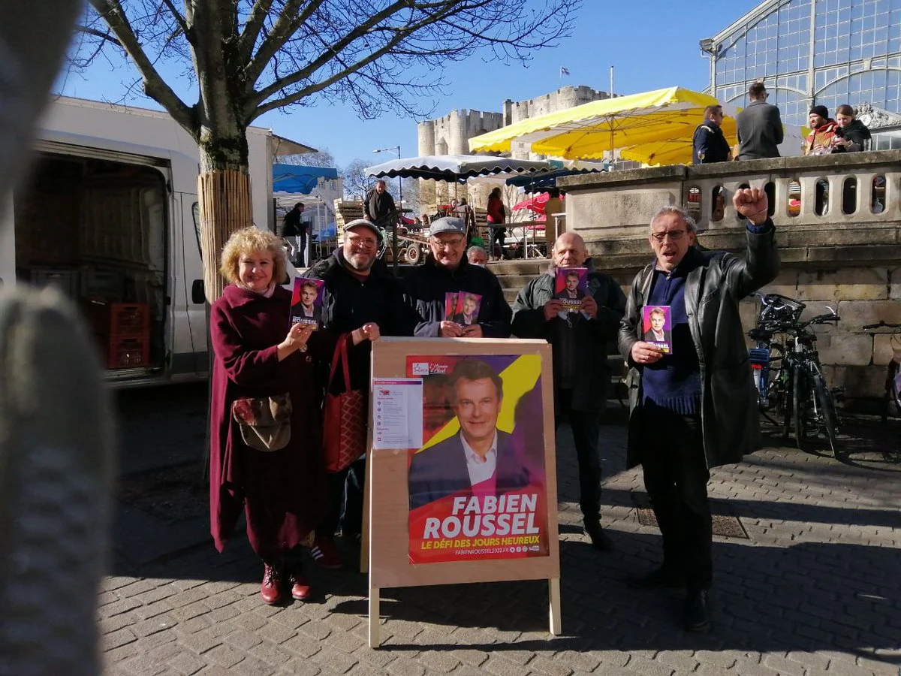

Publication sur X
Sur le marché de Niort, avec Fabien Roussel et les Jours heureux
Date de publication sur X · 14 février 2022
Repères éditoriaux
Nous avons porté la campagne des Jours heureux sur le marché de Niort. Facebook conserve une autre publication sur la présence de nos camarades pendant cette séquence.
Texte de la publication sur X
Super accueil ce matin au marché de #Niort, le Roussellement avance... #Roussel2022 ✊ https://t.co/ZHOBRMkAjV

Sources
PCF 79 · @79Parti sur X · AR-0005-TW-1493133621347115008
À lire aussi · Sénatoriales 2026. Le PCF 79 présente Frédéric Giraud et Valérie Mazé
Publications associées
- Sur le marché de Niort avec le programme des Jours heureux · Même séquence sur le marché de Niort
- Fabien Roussel. Une prise de parole pour la jeunesse · Campagne des Jours heureux
- Présidentielle 2022. Travail, fraternité et nationalisations · Campagne des Jours heureux